Browse Notifications Tab
The System Browser displays the hierarchy of the Notification node:
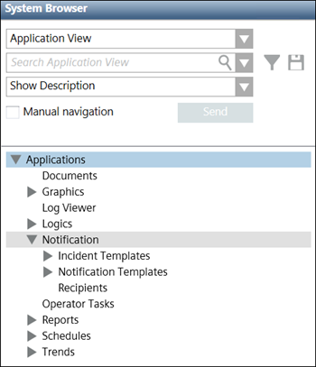
When the user clicks the BrowseNotifications tab, the following image displays:
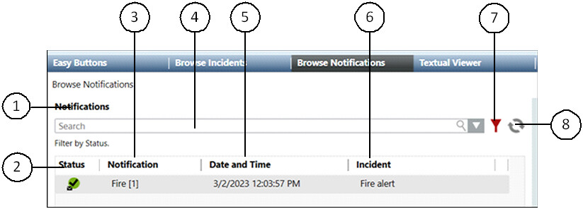
| Name | Description |
1 | Notifications | Displays the section name. |
2 | Status | Displays the current state of the notification. |
3 | Notification | Displays the description of the notification. |
4 | Search | Allows the user to search for a particular notification from the list of notifications. |
5 | Date and Time | Displays the launch date and time of the notification. |
6 | Incident | Displays the description of the initiated incident under which the corresponding notification is launched. |
7 | Advanced Search Options | Displays the advanced search options available for searching a notification. |
8 | Refresh | Refreshes the window. |
Advanced Search Options
This section displays the advanced search options for a notification.
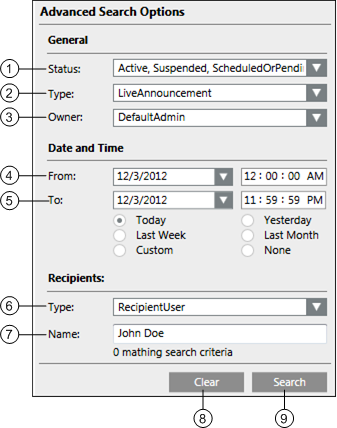
| Name | Description |
1 | Status | Allows the operator to search the notification according to its status. For example, Active, Suspended, Scheduled or Pending, Updated, Expired or Completed, and Canceled or Failed. |
2 | Type | Allows the operator to select the type as Message |
3 | Owner | Displays the ID of the user who initiates the incident. |
4 | From | Allows the operator to select the starting notification launch date and time for searching the notification. |
5 | To | Allows the operator to select the ending notification launch date and time for searching the notification. |
6 | Type | Allows the operator to select one from the two available options:
|
7 | Name | Allows the operator to search a notification by entering the name of the recipient. |
8 | Clear | Clears all the previous selections. |
9 | Search | Starts the search operation. |
When the user selects a notification, the details of the corresponding notification are displayed. The following image displays the details of a message template:
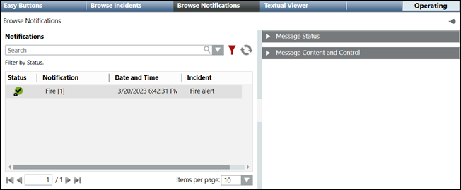
- Message Status: Displays the status of the selected message template and other details like type, owner, last action time, incident initiation time, priority, escalation, and total number of recipients. The Message Status section also displays options for suspending, resuming, and canceling a message template.
- Message Content and Control: Displays the details of the message content.
Message Status
The Message Status section displays the current message state, and message details such as message type, owner, last action time, incident initiation time, priority, acknowledgment period, and so on. This section allows the user to suspend, resume, and cancel a message.
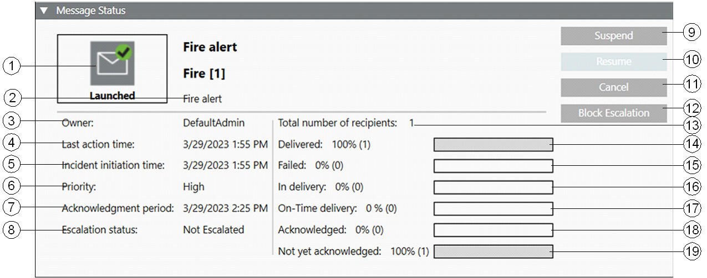
| Name | Description |
1 | Message State | Displays the current message state. |
2 | Type | Displays the message type. For example, Life-Safety Alert. |
3 | Owner | Displays the name of the user who initiated the incident. |
4 | Last action time | Displays the date and time of the last change in the message. |
5 | Incident initiation time | Displays the incident initiation date and time. |
6 | Priority | Displays the priority of the message. |
7 | Acknowledgment period | Displays the period during which recipient users can acknowledge the receipt of the message if acknowledgments are enabled for the message. |
8 | Escalation Status | Displays the status of escalation from the following:
|
9 | Suspend | Suspends a message. |
10 | Resume | Resumes a suspended message. |
11 | Cancel | Cancels a message. |
12 | Block Escalation | Blocks escalation of a message for which the escalation option is configured and escalation has not occurred yet. |
13 | Total number of recipients | Displays the total number of message recipients. |
14 | Delivered | Displays the percentage of recipients to whom the corresponding message is delivered. NOTE: The delivery of the messages is tracked by Notification in the following ways: 1. Delivery to the end devices. 2. Delivery to the intermediate devices like SMTP, and so on. |
15 | Failed | Displays the percentage of recipients to whom the corresponding message could not be delivered. |
16 | In Delivery | Displays the percentage of recipients to whom the corresponding message is still in delivery. |
17 | On-Time Delivery | Displays the percentage of recipients to whom the corresponding message was sent within the expected delivery time (as specified at the driver level). The on-time delivery percentage is visible only for messages with high priority; all messages with priority other than high have this detail hidden. |
18 | Acknowledged | Displays the percentage of recipient users who have acknowledged the receipt of the message if acknowledgments are enabled for the message. |
19 | Not yet acknowledged | If acknowledgments are enabled for the message, displays the percentage of recipient users who have not yet acknowledged the receipt of the message. |
Message State | ||
| Name | Description |
Launching | Displays the state when the incident is initiated and the associated message is not launched yet. | |
Launched | Displays the state when the message is launched. When a message with audio synchronization capable devices as system end devices is launched, then the message state is changed to | |
Scheduled | Displays the state when the Incident is initiated and the message associated with the incident is scheduled to be launched after the specified time. | |
Updating | Displays the state when the user updates the message. | |
Updated | Displays the state when the message goes through following three phases:
| |
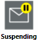 | Suspending | Displays this intermediate state when the user suspends a message but the corresponding message is not yet suspended. |
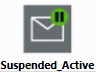 | Suspended_Active | Displays the state when the user suspends an unscheduled message and when the corresponding message has reached the |
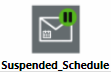 | Suspended_Schedule | Displays the state when the user suspends the scheduled message and when the corresponding message has reached the |
Canceling | Displays the state when the user cancels the message, but the message is not canceled yet. This is an intermediate state. | |
Canceled | Displays the state when the message is in one of the two phases after the user cancels the message:
| |
Expiring | Displays the state when Notification expires the message but the message has not officially expired yet. This is an intermediate state. | |
Expired | Displays the state when the message is under one of the two phases after the Notification expires the message:
| |
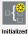 | Initialized | Displays when the incident is initiated and if its starting mode is either Manual or Auto. In case of Auto, only if the delay time is specified, the incident is in Initialized state. |
Message Content and Control
This section displays the message content details.
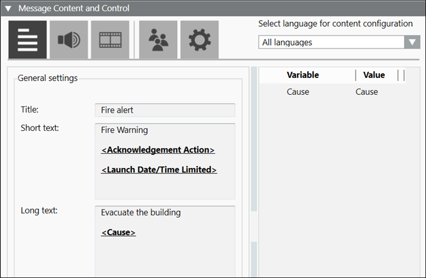
Item | Name | Description |
1 | Show text content | Displays the textual content of the message template. |
2 | Show audio content | Displays the audio content of the message template. |
3 | Show other file content | Displays the other file content like .pdf or video of the message template. |
4 | Show recipients content | Displays the list of recipients of the message template. |
5 | Show control options content | Displays the priority and priority tolerance of the message template. |
6 | Select language for content configuration | Allows the user to select the language-specific content entered at the time of message configuration. |
7 | Update (Available only for Reno Plus license users) | Allows the user to update the control options, recipients, audio, multimedia contents and user variables in text content. |
8 | Launch copy (Available only for Reno Plus license users) | Allows the user to launch the message under an existing incident. |
9 | Save as (Available only for Reno Plus license users) | Allows the user to save the message template under a new name. |
Show the Text Content of a Message Template
This section displays the textual content of a message.
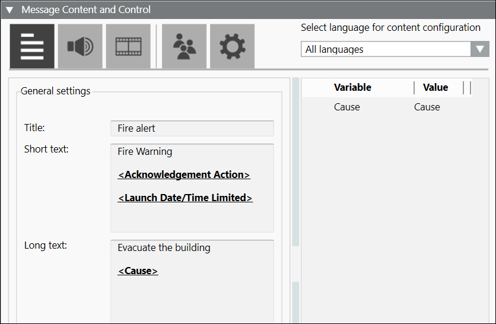
- Select Language for Content Configuration: Allows the user to select the language-specific content entered at the time of message configuration.
- Variable: Displays the variable entered at the time of message configuration.
- Value: Allows the user to enter the value of event variables and user variables. The operator cannot change the value of system variables.
- Title: Displays the message title. For example, Fire.
- Short Text: Displays the short description of the message.
- Long Text: Displays the detailed description of the message.
- Preview: Displays the preview of the message text content.
Show the Audio Content of a Message
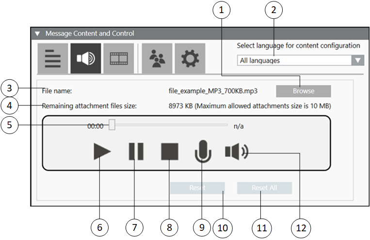
| Name | Description |
1 | Browse | Allows the user to navigate to the desired location for the audio file selection. |
2 | Select Language for Content Configuration | Allows the user to select the language-specific content entered at the time of message configuration. |
3 | File name | Displays the name of the audio file. |
4 | Remaining attachment files size | Displays the available file size in KB. |
5 | Audio slider | Displays the progress of the audio file while the corresponding audio file is being played. |
6 | Play | Plays the audio file. |
7 | Pause | Pauses the audio file. |
8 | Stop | Stops the audio file. |
9 | Record | Records an audio file. |
10 | Reset | Resets only the audio file configured for the currently selected language. |
11 | Reset all | Resets the audio file content configured for all languages. |
12 | Volume | Increases or decreases the sound level output of the audio file. |
Show the Other File Content of a Message Template
This section displays the other file content of a message.
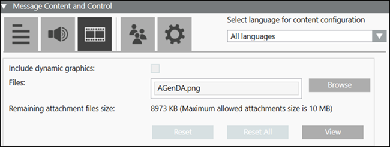
- Browse: Allows the user to navigate to the desired location for the other file selection.
- Select Language for Content Configuration: Allows the user to select the language-specific content entered at the time of message configuration.
- Files: Displays the name of the file.
- Remaining attachment files size: Displays the available file size in KB.
NOTE: The maximum allowed attachment size is 10MB. - Reset: Resets only the multimedia file configured for the currently selected language.
- Reset All: Resets the file content (video, pdf or text file fields) configured for all languages.
- View: Allows the user to view the multimedia file.
Show the Message Recipients
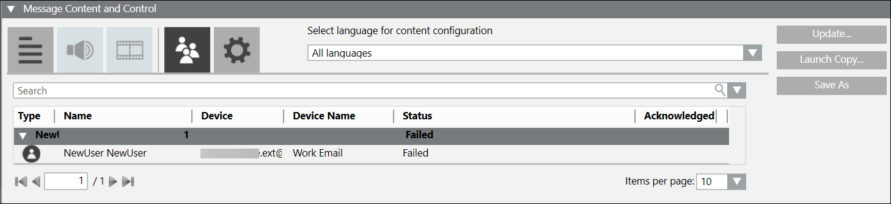
- Select Language for Content Configuration: Allows the user to select the language-specific content entered at the time of message configuration.
- Search: Search for a particular recipients from the list of recipients.
- Type: Displays the icons of a recipient type for the recipients.
- Name: Displays the names of the recipients.
- Device: Displays the device address associated with the recipient.
- Device Name: Displays the device type associated with the recipient.
- Status: Displays any of the following status message:
- Delivered: Message is delivered to the recipient.
- Delivering: Message delivery is initiated but not delivered.
- Not Started: Message is launched but delivery is not started.
- Failed: Message delivery is failed.
- Excluded: The recipient is blocked.
- Not Resolved: Displays either when the driver is not created or when the driver is created, but does not navigate to the recipient editor before sending the notification.
- Acknowledged: Displays the acknowledgment status of the recipient for the message with acknowledgment settings configured.
- - Represents that the recipient user has acknowledged the receipt of message.
Show the Control Options Content of a Message Template
This section displays the control options of a message.
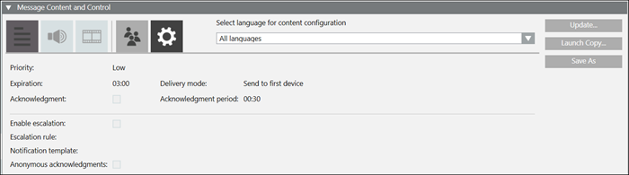
- Select Language for Content Configuration: Allows the user to select the language-specific content entered at the time of message configuration.
- Priority: Allows the user to select the priority of the message.
- Expiration: Allows the user to select the expiration time for the message.
- Acknowledgment: Allows the user to request the collection of acknowledgments.
- Enable escalation: Select the check box to enable escalation configuration.
- Escalation rule: Allows the user to:
- select an operator, such as, less than <, greater than >, and so on from the drop-down list
- enter the value
- select the percentage % or exact value indicator # from the drop-down list
- select the condition for escalation, for example, Delivery fails from the drop-down list.
- Notification template: For message templates that are part of an incident template, this field allows users to select a targeted notification template from the drop-down list. Alternatively, the user may drag and drop a stand-alone notification template from the System Browser hierarchy to configure the targeted notification template.
NOTE: Notification templates cannot be dragged and dropped for escalation in Windows App clients. For Windows App clients, users need to select a targeted notification template from the drop-down list. - Anonymous acknowledgments: Allows the user to include the acknowledgments that are not mapped to any recipient user as valid acknowledgments to be considered for the escalation rule.
- Delivery mode: Allows the user to select the mode of delivery of the message to the recipient user.
- Acknowledgment Period: Allows the user to define the time period starting from the start of delivery of a message during which the system will collect and evaluate the acknowledgments.